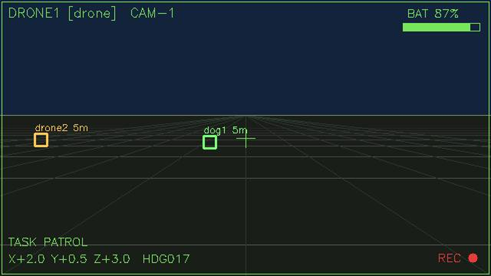
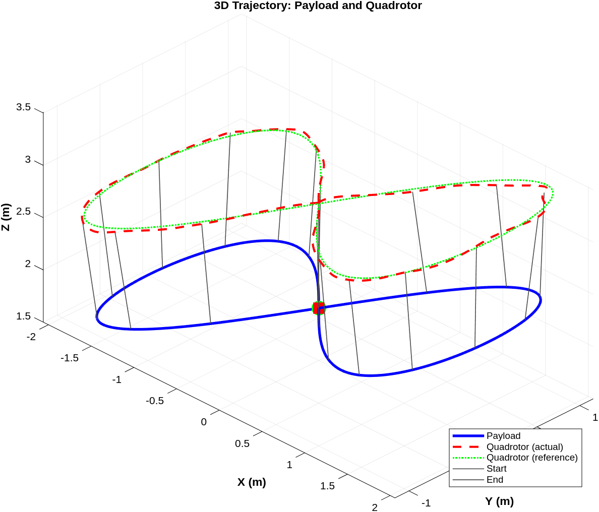
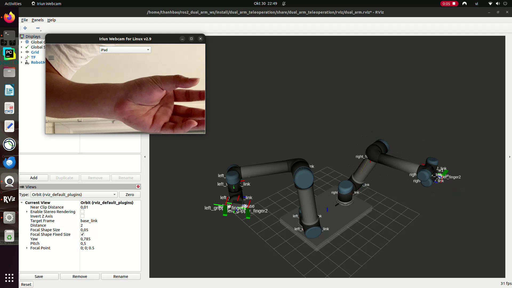
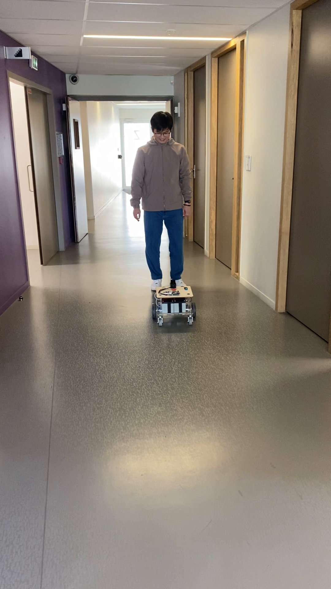
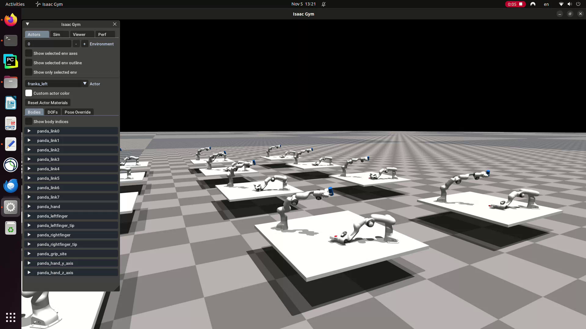
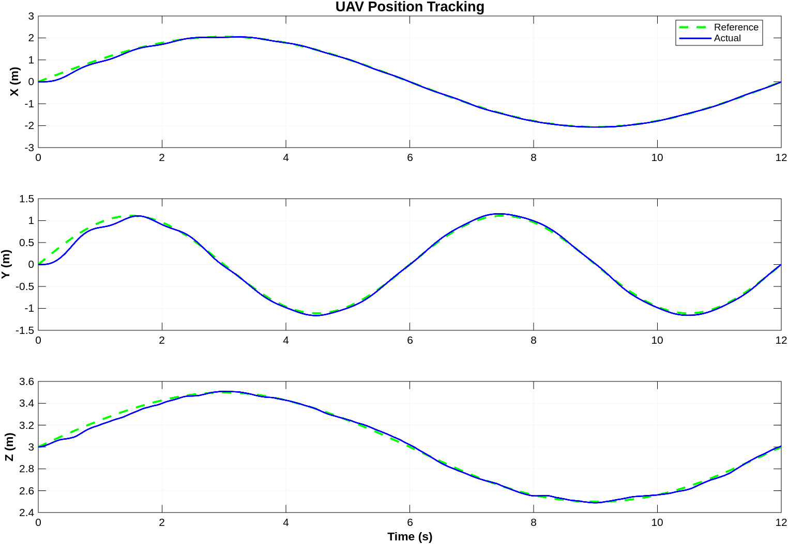
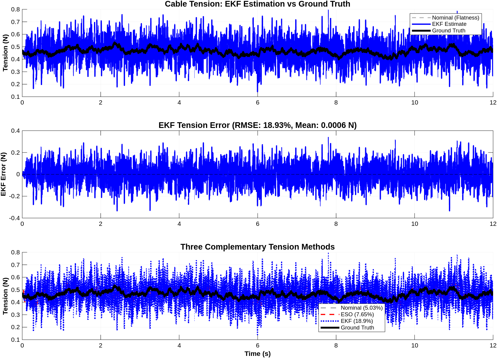
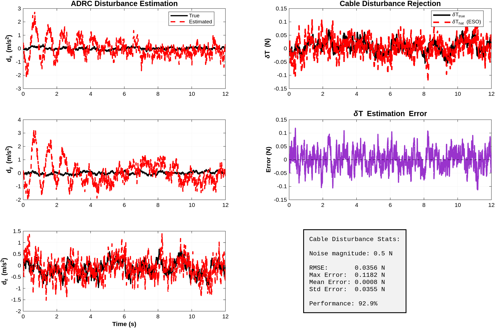
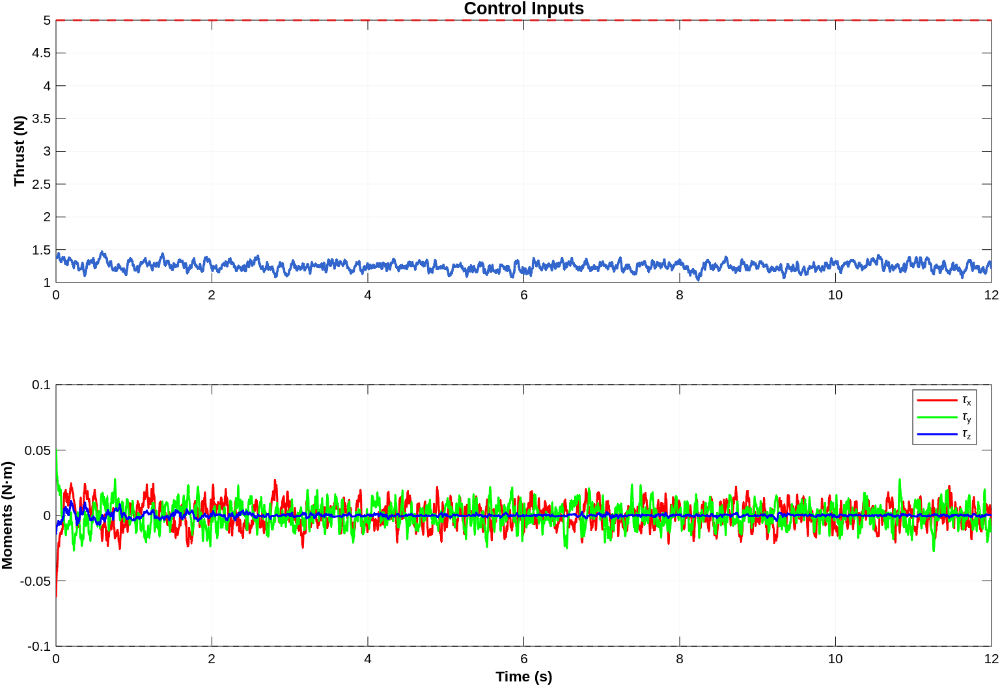
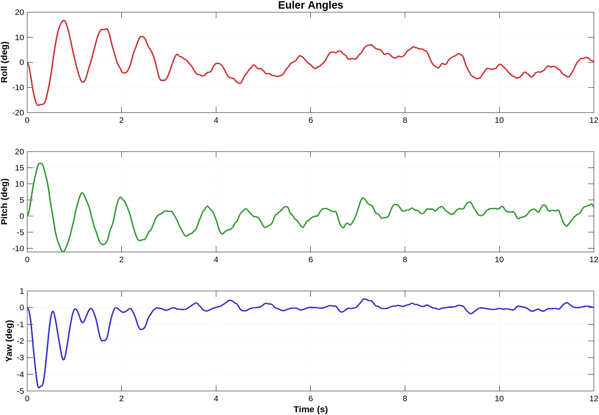

Contact me

Thanh Bao TRAN
Master of Science in Mobile, Autonomous and Robotic Systems
@ Grenoble INP - UGA

ROS2 | MAVSDK | Multi-Robot
One operator commanding robot dogs & drones

EKF | ADRC | Differential Flatness
Real-time tension estimation for safe UAV operations

ROS2 | MediaPipe | Computer Vision
Intuitive hand gesture control for dual-arm manipulation

2D LiDAR | DATMO Tracking | ROS2 C++
Autonomous human-following mobile robot

Deep RL | Isaac Gym | PPO
Coordinated manipulation with reinforcement learning
Linear & Nonlinear Control, MPC
ADRC, Optimal Control
Multi-Agent Systems
ROS2, Gazebo, RViz
Isaac Sim/Gym
Motion Planning, SLAM
Computer Vision
Python, C++, MATLAB
PyTorch, OpenCV
Git, Docker, Linux
Deep Reinforcement Learning
Computer Vision
Neural Networks
Eigen, Sophus, g2o, Ceres
scikit-learn
MATLAB/Simulink, Blender
Autonomous Systems
Visual SLAM
UAV Control
Vision-Language-Action
Duration: 2026
Type: Personal project (simulation only — no hardware)
One operator must command a heterogeneous fleet — robot dogs and drones — from a single AR-glasses-style interface: issue task commands, watch live first-person video, and keep an eye on the whole fleet at once.
Synthetic first-person view with AR-style HUD, rendered by the project's own FPV server
A ROS2 integration layer in which the mission logic never talks to a robot directly — only to an abstract adapter interface. Swapping a simulated robot for a real SDK (PX4/MAVSDK, Unitree, DJI) never touches the task layer.
/fleet/command bus; target one robot or broadcast to all; every robot publishes to a shared /fleet/states topic at 20 HzDuration: September 2025 — February 2026
Location: GIPSA Lab, CNRS, Grenoble, France
Hardware-ready control framework for quadrotor UAVs transporting suspended payloads under realistic sensor noise. Integrates differential flatness planning, Extended Kalman Filter (EKF) sensor fusion, and Active Disturbance Rejection Control (ADRC) for robust trajectory tracking using only noisy IMU and cable angle measurements.
Figure-8 (Lissajous) trajectory with ADRC controller
Quadrotor UAVs with cable-suspended payloads face challenges including underactuated cable dynamics, time-varying tension forces, and parameter uncertainties. Real-time tension estimation is critical for safe operations, but traditional model-based methods require accurate models and struggle with sensor noise. This project develops a hardware-ready control and estimation framework that operates solely on noisy sensor measurements, mimicking real deployment conditions.
Key innovation: decompose cable force into known nominal tension (from differential flatness) and unknown disturbances (estimated by Extended State Observer). This prevents naive ADRC from fighting against required tension, ensuring stability while rejecting model mismatch and external forces.
10-dimensional Extended Kalman Filter fuses noisy IMU position measurements (σp = 30mm) and cable angle sensors (σθ = 0.5°) to estimate:
EKF estimates replace unavailable true state in the control loop, providing realistic hardware-ready validation.
Extended State Observer (ESO) estimates total disturbance (model errors, external forces, parameter uncertainties) and cancels it via feedback. Controller operates solely on noisy EKF state estimates—never accesses ground truth.
MATLAB simulation; control: ADRC/ESO + geometric attitude control on SO(3); estimation: 10-state EKF; planning: differential flatness (point-to-point, circular and figure-8 trajectories).
3D trajectory tracking: desired (blue) vs actual (red)
Controller uses only noisy EKF estimates (not true state), demonstrating realistic deployment performance.

Position tracking over time
EKF achieves sub-sensor-noise position accuracy (21.4mm vs 30mm sensor noise) through optimal sensor fusion, providing accurate state feedback for control.

Cable tension estimation: true (blue), EKF (red), nominal (green), ESO (purple)
| Method | RMSE | Purpose |
|---|---|---|
| Nominal (Flatness) | 5.03% | Feedforward control |
| ESO (Indirect) | 7.65% | ADRC validation |
| EKF (Direct) | 18.9% | Safety monitoring |

ADRC validation: disturbance observation and rejection

Control inputs: thrust and moments over time

UAV attitude angles during trajectory tracking
Point-to-point minimum-snap trajectory
An innovative teleoperation system enabling intuitive control of two UR5 robotic arms through hand gestures captured via webcam. The system leverages MediaPipe for robust hand tracking and ROS2 for reliable robot control.
Real-time hand gesture control of dual UR5 robotic arms
Traditional robot teleoperation systems require specialized hardware and extensive training. This project aims to create an intuitive, low-cost teleoperation interface using only a standard webcam and hand gestures, making dual-arm manipulation accessible.
Leveraged MediaPipe for robust hand tracking with 21 landmarks per hand, enabling precise gesture recognition in various lighting conditions.
Built comprehensive ROS2 system with multiple control modes (hand tracking, keyboard, automatic demo) and 3D visualization in RViz.
Duration: September 2025 — February 2026
Course: Mobile Robotics, Grenoble INP
Developed a comprehensive DATMO (Detection And Tracking of Moving Objects) system for mobile robots. The system uses laser scan data to detect and track humans in real-time, enabling autonomous human-following behavior with robust performance under occlusion and sensor noise.
Mobile robot autonomously following a moving person using laser-based detection and Kalman filter tracking
Human-following robots have applications in healthcare (assistive robotics), logistics (smart carts), and service robotics (tour guides). The challenge lies in maintaining robust tracking under occlusion and sensor noise while ensuring safe navigation in dynamic environments.
Implemented background subtraction algorithm to detect dynamic objects in the environment:
Developed adaptive clustering algorithm to segment laser scan data:
Identifies human legs from clusters using geometric constraints:
Fuses leg pairs into person detections:
Tracks the target person frame-to-frame:
Finds closest obstacle for collision-free navigation:
Duration: October 2023 — April 2024
Institution: CIR Lab, National Taiwan Normal University, Taipei, Taiwan
Research internship project training dual Franka Emika Panda robot arms to perform coordinated bottle cap removal task using Proximal Policy Optimization (PPO) in NVIDIA Isaac Gym simulator.
Dual Franka arms performing coordinated bottle cap removal using learned PPO policy
Coordinated dual-arm manipulation remains challenging due to high-dimensional state-action spaces and complex contact dynamics. Deep reinforcement learning offers a data-driven approach to learn these intricate behaviors.
Implemented custom bottle cap removal task requiring coordinated manipulation between two Franka Emika Panda arms.